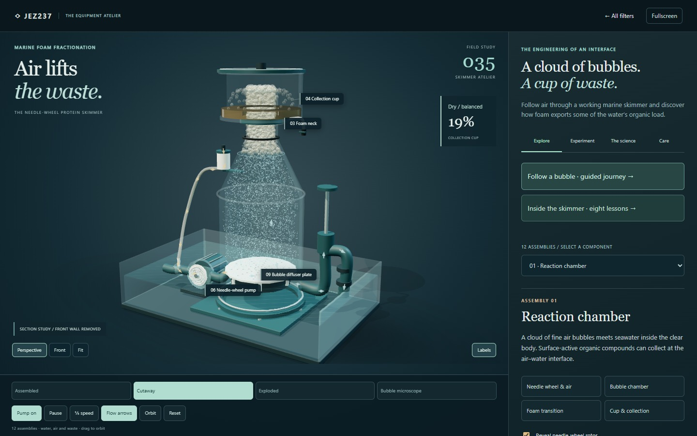

OPEN THE INTERACTIVE STUDY ↗01 / Marine foam fractionation
Skimmer Atelier
Follow air through a needle-wheel marine skimmer. Inspect the bubble cloud, tapered neck and collection cup, then enlarge one air–water interface to see how surface-active molecules collect. Compare wet and dry skimming and investigate air restriction, power loss and overflow.
- 12 assemblies, eight lessons & seven experiments
- Fine bubbles, wet foam films & filling collection cup
- Guided bubble journey & air–water microscope
- Wet/dry operation, restricted air & overflow studies